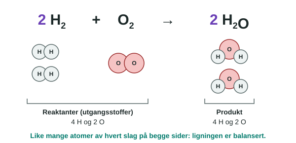
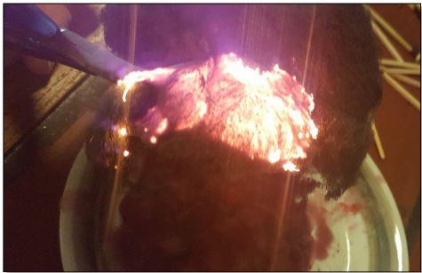
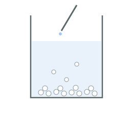

Kjemiske reaksjoner og reaksjonsligninger
I en prosessreaktor blir råstoffer til produkter. På laben reagerer en prøve med et kjemikalie du tilsetter. Alt dette er kjemiske reaksjoner. En reaksjonsligning er oppskriften: den viser hva som reagerer, hva som dannes, og i hvilket forhold.
Hva er en kjemisk reaksjon?
I en kjemisk reaksjon dannes det nye stoffer med andre egenskaper enn stoffene du startet med. Bindinger i utgangsstoffene brytes, og nye bindinger dannes. Atomene forsvinner ikke. De bare settes sammen på en ny måte.
Stoffene du starter med, kalles reaktanter (utgangsstoffer). Stoffene som dannes, kalles produkter.
Ikke alle endringer er kjemiske reaksjoner. Når is smelter, vann koker eller salt løses i vann, har du fortsatt det samme stoffet. Det er en fysisk endring.
Tegn på at en reaksjon skjer
- Fargen endres, for eksempel når blankt kobber blir svart kobberoksid.
- Energi gis fra seg eller tas opp: det blir varmt eller kaldt, eller det kommer lys, som når magnesium brenner.
- Det dannes gass: det bobler i en væske, det ryker, eller det kommer en ny lukt. Når hornsalt varmes opp, lukter det for eksempel ammoniakk. Lukt må du kjenne forsiktig: vift lufta mot deg med hånda, og stikk aldri nesen ned i glasset.
- Det dannes et fast stoff i en løsning (utfelling). Når sølvnitrat blandes med natriumklorid, dannes hvitt sølvklorid.
Tegnene viser at noe skjer, men de er ikke alltid bevis for en kjemisk reaksjon. Vann som koker, bobler også, og noen salter blir kalde når de løses i vann. Spør deg selv: er det dannet et nytt stoff?
Reaksjonsligningen
En reaksjonsligning skrives med reaktantene til venstre og produktene til høyre. Pilen betyr «reagerer og gir». Aggregattilstanden kan stå i parentes.
\[ \ce{2H2(g) + O2(g) -> 2H2O(l)} \]

Massebevaring
Siden atomene ikke forsvinner, er massen av produktene lik massen av reaktantene. Dette kalles loven om massebevaring. På en vekt ser du det bare hvis ingenting slipper inn eller ut, altså i et lukket system. Reagerer stoffet med lufta, eller går det gass ut, endres massen du måler. Derfor må en reaksjonsligning være balansert: det skal være like mange atomer av hvert slag på begge sider.

Slik balanserer du en reaksjonsligning
Metan (naturgass) brenner med oksygen og gir karbondioksid og vann. Ubalansert: \( \ce{CH4 + O2 -> CO2 + H2O} \)
- Karbon: 1 til venstre og 1 til høyre. Det stemmer.
- Hydrogen: 4 til venstre og 2 til høyre. Sett 2 foran H2O: \( \ce{CH4 + O2 -> CO2 + 2H2O} \)
- Oksygen: Til høyre er det nå 2 + 2 = 4 O. Til venstre er det 2. Sett 2 foran O2.
- Kontroll: 1 C, 4 H og 4 O på hver side.
Svar: \( \ce{CH4 + 2O2 -> CO2 + 2H2O} \)
- Endre bare koeffisientene (tallene foran). Endre aldri indeksene. Da blir det et annet stoff.
- Ta grunnstoffene som bare finnes i ett stoff på hver side først. Ta hydrogen og oksygen til slutt.
- Kontroller alltid ved å telle atomene på begge sider.
Forsøk med forbrenning, for eksempel av magnesium og stålull, skal gjøres på et ubrennbart underlag, med vernebriller og brannteppe i nærheten. Brennende magnesium gir et svært sterkt lys. Ikke se rett inn i flammen. Sølvnitrat er etsende og gir svarte flekker på huden. Bruk hansker.
Test deg selv
Hvilket tegn på kjemisk reaksjon viser figuren?

- gassutvikling
- utfelling
- temperaturendring
Det dannes et fast stoff i løsningen. Det kalles utfelling.
Hva kalles stoffene til venstre for pilen i en reaksjonsligning?
- reaktanter
- produkter
- koeffisienter
Reaktantene er utgangsstoffene. Produktene står til høyre.
Hvorfor må en reaksjonsligning være balansert?
- Fordi produktene alltid er tyngre.
- Fordi atomene ikke forsvinner eller lages i en reaksjon.
- Fordi alle stoffer må ha koeffisient 2.
Loven om massebevaring: like mange atomer av hvert slag før og etter.
Hva er riktig balansert ligning for \( \ce{Al + O2 -> Al2O3} \)?
- \( \ce{2Al + O2 -> Al2O3} \)
- \( \ce{Al + 3O2 -> 2Al2O3} \)
- \( \ce{4Al + 3O2 -> 2Al2O3} \)
Til høyre: 2 · 2 = 4 Al og 2 · 3 = 6 O. Til venstre: 4 Al og 3 · 2 = 6 O.
Stålull blir tyngre når den brenner. Hvorfor?
- Det dannes nye atomer i flammen.
- Jernet binder oksygen fra lufta.
- Asken trekker til seg vann.
Massen er bevart. Produktet (jernoksid) inneholder også oksygenet fra lufta.
Hvorfor kan du ikke balansere \( \ce{H2 + O2 -> H2O} \) ved å skrive H2O2?
- Da blir det et annet stoff (hydrogenperoksid).
- Fordi O2 ikke finnes.
- Det kan du, det er riktig.
Du endrer bare koeffisientene, aldri indeksene.
Ordliste
| Begrep | Forklaring | Engelsk |
|---|---|---|
| kjemisk reaksjon | Prosess der stoffer omdannes til nye stoffer med andre egenskaper, fordi bindinger brytes og nye dannes. | |
| reaktant | Stoff som reagerer i en kjemisk reaksjon. Står til venstre for pilen. | |
| produkt | Stoff som dannes i en kjemisk reaksjon. Står til høyre for pilen. | |
| reaksjonsligning | Kjemisk skrivemåte som viser hvilke stoffer som reagerer, hva som dannes, og i hvilket forhold. | |
| fysisk endring | Endring der stoffet er det samme etterpå, for eksempel smelting, koking og oppløsning. | |
| massebevaring | Loven om at den samlede massen er den samme før og etter en kjemisk reaksjon, fordi atomene ikke forsvinner. | |
| balansert ligning | Reaksjonsligning med like mange atomer av hvert slag på begge sider av pilen. | |
| utfelling | Fast stoff som dannes og skilles ut når to løsninger reagerer. Også navnet på selve reaksjonen. |
Les mer
- Kjemien stemmer, kapittelet om kjemiske reaksjoner og reaksjonsligninger.
Om kildene: Teksten, eksemplene og figurene på denne siden er laget for dette nettstedet. Fotografiet er tatt på laben ved Sauda vgs. Siden bygger på undervisningsopplegg i kjemiprosess- og laboratoriefag ved Sauda vgs, som er utarbeidet med utgangspunkt i blant annet Kjemien stemmer, Laboranten og åpne nettkilder.